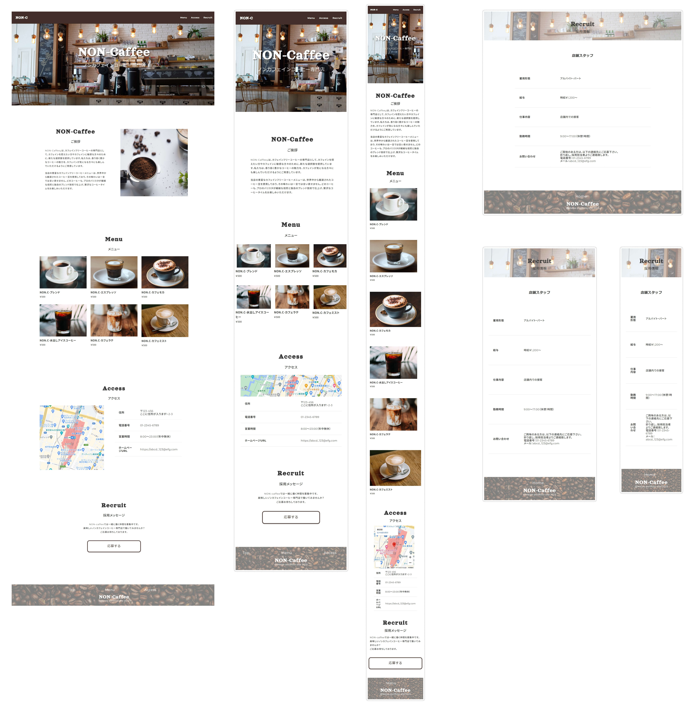

NON-Caffee（架空のノンカフェインコーヒー専門店サイト）
デザイン（Figma）/コーディング（VScode）
上がコーディング後のサイトキャプチャ、下がFigmaのプロトタイプ画面です。
上がコーディング後のサイトキャプチャ、下がFigmaのプロトタイプ画面です。

URL（別ウィンドウで開きます）
works/non-caffee-site/index.html制作期間
デザイン：3日
コーディング：2日
コンセプト
ノンカフェインコーヒー専門店。利便性の良い駅ナカにあり、営業時間が長い。
利用客は帰宅時のサラリーマンや妊婦さん、服薬中の人などコーヒーを愛好しているがカフェインが気になる人。
配色・デザインについて
コーヒーをイメージして白・茶でまとめてみました。
フッターにコーヒー豆の画像を使用しました。
使用機能
Figma
・デザイン
オートレイアウト/メインコンポーネント/グループ/バリアント/ドロップシャドウ
・プロトタイプ
インタラクション（マウスオーバー時・画面遷移時）
作成過程をWordpressサイト内のブログに記録しています、よかったら見て下さい。